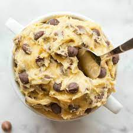

Edible Cookie Dough

Description
This edible cookie dough is quick easy and customizable to your cookie dough preferences. It's a tastier alternative to baking home-made cookies and a lot faster to make.
Please keep in mind that this is a COOKIE DOUGH ONLY.
| 5 minutes |
5 minutes |
6 |
up to 10 in fridge |
Ingredients
- 1/2c light Brown Sugar
- 1/2c vegan butter
- 3tbsp white sugar
- 1c heat treated all-purpose flour
- 1tbsp Non-dairy milK
- 1tsp Vanilla Extract
- pinch of Salt
- 1/4-1/2c Dairy Free chocolate chips
Steps to make this meal
- Start with heat treating the flour in the microwave for increments of 30 seconds until the flour is 160 degrees fahrenheit.
- In a medium bowl, combine everything but the milk and chocolate chips. Mix until ingredients form a crumbly consistency.
- Add the milk and stir well again.
- Fold in the chocolate chips until they stick into the mixture well.
QUICK AND SIMPLE :)